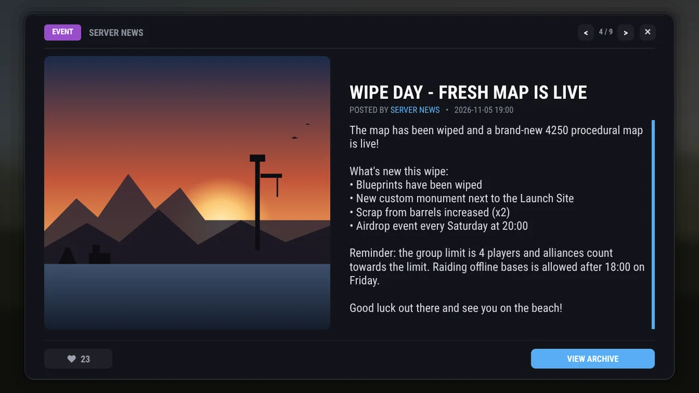

Oxide / uMod plugin for Rust
In-game news your players actually read
Post an announcement and everyone online gets a toast. Players read it in a clean popup, vote in polls, watch the wipe countdown and catch up on everything they missed with /news. You run it all from an in-game editor.

Live example: a weekly wipe on Thursday at 19:00, in your time.
What it needs
Oxide (uMod). RP rewards need ServerRewards and currency rewards need Economics.
Light on the server
Small screens, batched saves, a cooldown on page and search clicks, and no timer running while nothing is scheduled.
Current Rust
Built for the November 2026 Rust update and its new file storage.
Tested on every build
410 automated checks, and it compiles as C# 6 and C# 7.
Features
One plugin for all your server news
Most of it works with Oxide alone. RP rewards, currency rewards and Notify-style notifications need another plugin; see Plugins it uses.
For players what everyone on the server sees
- Toasts and popupsNew posts arrive as a toast in the corner or straight as a popup, with a title, picture, text and a coloured type badge.
- The archive
/newslists every post with thumbnails, NEW badges, an unread counter and Mark all read. Players who were offline get one chat reminder. - Filters and searchChips for Info, Warning, Alert, Event, Update and Polls, plus a search box that looks through titles and text.
- PollsTwo to four options, one-click voting and live result bars. Players can change their vote until the poll closes.
- CountdownsA live timer inside the post, such as WIPE IN 2 DAYS 04:12:33, counted by the player's own game.
- Likes and rewardsPay items, RP (needs ServerRewards) or currency (needs Economics) for reading or liking a post, once per player per post.
- Their own settings
/news settingsturns off the sound, swaps pop-ups for a chat line, or skips the post shown when joining.
For admins everything happens in game
- In-game editorContent on the left, settings on the right, a live preview, character counters and a check that warns about image links that won't show.
- Drafts and copiesSave a post as a draft and publish it later, or copy last week's wipe post and change the date.
- Posts for one groupLimit a post to an Oxide group such as VIP or staff. Nobody else sees it, anywhere.
- Auto-deleteEvent posts remove themselves 1, 3, 7, 14 or 30 days after publishing.
- Timed pollsClose a poll after 1 hour to 7 days. The result goes to chat and Discord when it closes.
- Pin, resend, bulkKeep the rules on top in a gold frame, re-notify everyone online, or pin and delete many posts at once.
- DiscordType-coloured embeds with the picture, an optional role or @here ping, and poll results.
- Console and APIPost, list, publish, resend and delete from RCON. Seven hooks for other plugins, and methods to post news from them.
Rounded, premium UI
Panels, cards and pictures get smooth, anti-aliased corners. The plugin draws the corner images in code when the server starts, so no image plugin is needed. Small controls stay flat, which keeps every screen light.
Smooth animation
Screens reveal top to bottom, archive rows cascade in and likes pop. The player's game runs every fade, so it costs your server nothing.
Six themes, and yours
Pick one in game or add your own. Colours are Rust CUI strings, red green blue alpha from 0 to 1.
0.07 0.08 0.10 0.970.36 0.71 1.00 0.950.04 0.04 0.05 0.980.85 0.85 0.88 0.950.05 0.09 0.12 0.970.20 0.78 0.95 0.950.10 0.08 0.07 0.970.95 0.40 0.18 0.950.06 0.05 0.10 0.970.62 0.40 0.98 0.950.06 0.09 0.07 0.970.40 0.85 0.55 0.95Six notification spots
Top or bottom, left, centre or right, plus fine X and Y offsets so the toast never covers another plugin's HUD.
Five announcement types each with its own colour, in game and on Discord
Info
WarningWarning
AlertAlert
EventEvent
UpdateUpdate
Pinnedgold frame
Screens
Every screen, as players see it
Rendered from the plugin itself at 1920 × 1080. Click any screen to see it full size.
Players notification, popup, polls, archive, settings
Admins News Management, the editor, preview, themes
Motion
Moves like a game menu
Rust's client runs every fade itself, so the animation is smooth for players and free for your server.
- Opening a screenThe background fades in, then the content builds up top to bottom.
- Clicking aroundFilters, pages and buttons redraw instantly. The menu never blinks and the mouse stays where you clicked.
- ArchiveRows cascade in one after another.
- ToastFades in, and fades out on its own or when clicked.
- Like and voteThe button pops and result bars fade in. The rest stays still.
Install
Up and running in three steps
Works on any Oxide server on the current Rust version. Coming from an earlier build? Remove its config and data file first; 1.0.0 starts fresh.
-
Add the file
Put the plugin in your plugins folder. Keep the exact file name: Oxide only loads it when the name matches.
oxide/plugins/NewsBroadcaster.cs
-
Give permissions
Everyone can read the news; you get the admin panel. Use your 17-digit SteamID.
oxide.grant group default newsbroadcaster.view oxide.grant user <SteamID> newsbroadcaster.admin
-
Post your first news
Open the admin panel in game, press NEW ANNOUNCEMENT, write your post and press PUBLISH.
/news admin
Posts for VIPs only
Create the group, add players, then pick VIP ONLY under WHO CAN SEE IT in the editor.
oxide.group add vip oxide.usergroup add <player> vip
Commands
Chat, console and RCON
Console commands take the list index from news.list (0 is the newest) or a post's id.
Chat
| Command | Who | What it does |
|---|---|---|
/news | Players | Open the news archive |
/news latest | Players | Open the newest post |
/news read | Players | Mark everything as read |
/news settings | Players | Sound, pop-up and join settings |
/news help | Everyone | List the commands |
/news admin | Admins | Open News Management |
Permissions
| Permission | What it allows |
|---|---|
newsbroadcaster.view | See news: archive, popups and toasts. Not needed when RequireViewPermission is false. |
newsbroadcaster.admin | Create, edit, publish, pin, resend and delete posts, and change the theme. |
Console / RCON
| Command | What it does |
|---|---|
news.show "Title" "Image" "Text" [Type] | Post an announcement |
news.poll "Title" "Text" "A|B|C" [Type] | Post an announcement with a poll |
news.list | List posts with index, id, reads and likes |
news.publish <index|id> | Publish a draft |
news.resend <index|id> | Notify everyone online again |
news.delete <index|id> | Delete a post |
news.trigger <player> [index] | Show a popup to one player |
news.admin | Open the admin panel in game |
news.show "Server Update" "https://i.imgur.com/abc123.png" "The server has been updated!" Update news.show "Alert!" "-" "PvP zone closing in 10 minutes." Alert news.poll "Map size" "Pick the next map" "3500|4250|4500" Event
Use "-" for no image and \n for a new line. The type is read only when it is the last, unquoted word.
Configuration
Options you can change
Edit oxide/config/NewsBroadcaster.json, then run oxide.reload NewsBroadcaster. Updating from an older version keeps your values and themes; new options appear with their defaults.
General
| Option | Default | What it does |
|---|---|---|
ShowNewsOnConnect | true | Show the newest unseen post when a player wakes up |
UnreadReminderOnConnect | true | One chat line about posts missed since the last visit |
RequireViewPermission | true | false lets everyone see news |
AutoCloseSeconds | 15 | Broadcast popups close after this, with a live countdown |
AnnouncementsPerPage | 5 | Rows per archive and admin page (keep it between 1 and 8) |
MaxStoredAnnouncements | 50 | Oldest posts go first; pinned posts, drafts and the newest post are kept |
StripLinksFromBody | true | Remove links from new post bodies |
PopupImageFrame | "Tall" | "Wide" uses a 16:9 frame for widescreen pictures |
ArchiveThumbnails | true | Picture thumbnails in the archive |
RoundedCorners | true | false draws square corners everywhere, with about 40% fewer UI elements |
Notification
| Option | Default | What it does |
|---|---|---|
Enabled | true | Toast for new posts; false opens the popup directly |
Position | "TopRight" | TopRight, TopLeft, TopCenter, BottomRight, BottomLeft or BottomCenter |
OffsetX / OffsetY | 0 | Nudge the toast, in 1280 × 720 reference units |
Duration | 8 | Seconds the toast stays |
NotificationSound | loot.drag | Sound prefab, heard only by the receiving player |
UseNotifyPlugin | false | Send it through the Notify plugin instead |
Polls
| Option | Default | What it does |
|---|---|---|
AllowVoteChange | true | Players can switch their vote |
ShowResultsBeforeVoting | false | Show the bars before a player votes |
AnnounceResults | true | Result in chat and on Discord when a poll closes |
Discord
| Option | Default | What it does |
|---|---|---|
Enabled / WebhookUrl | false / "" | Post new announcements to a channel webhook |
BotName / AvatarUrl | "Server News" | How the webhook appears |
RoleMention | "" | A role, @here or @everyone ping above the embed |
PostGroupOnlyPosts | false | Also post announcements meant for one group |
PostPollResults | true | Post the result when a poll closes |
Rewards items, RP and currency
One bundle for reading a post (popup open for ReadDelaySeconds) and one for liking it. Each pays at most once per player per post, and can mix items (any shortname, optional skin), ServerRewards points and Economics currency.
"EnableReadReward": true,
"ReadDelaySeconds": 5,
"ReadRewards": {
"Items": [ { "Shortname": "scrap", "Amount": 5, "SkinId": 0 } ],
"Points": 25,
"Currency": 100.0
}API
Hooks and methods for other plugins
Every hook gets a plain Dictionary<string, object>, so your plugin doesn't need NewsBroadcaster's classes.
| Hook | When it fires |
|---|---|
OnNewsBroadcast(ann) | A post goes live (console, editor or a published draft) |
OnNewsEdited(ann) | A post is edited, pinned or unpinned |
OnNewsDeleted(ann) | Deleted, trimmed, or auto-deleted |
OnNewsRead(player, ann) | A player reads a post for the first time |
OnNewsLiked(player, ann, added) | A like or an un-like |
OnNewsPollVote(player, ann, option) | A vote, with the 0-based option |
OnNewsPollClosed(ann) | A poll closes by its timer or by an admin |
Methods your plugin can call
| Method | What it does |
|---|---|
API_PostNews(title, text, type) | Publishes a post and returns its id |
API_CreateNews(options) | The same with every option: poll, group, countdown, draft... |
API_DeleteNews(id) | Deletes a post |
API_GetNews(id) / API_GetNewsList() | Read one post, or all published ones |
API_GetUnreadCount(player) | Unread posts a player can see |
API_ShowNews(player, id) | Opens a post for a player |
Payload keys
idtitleauthortypetimestampdatetextimageUrllikespinnedpollOptionspollVotesgroupexpiresAtpollEndsAtcountdownTovoid OnNewsBroadcast(Dictionary<string, object> ann) { Puts($"[News] {ann["author"]} posted '{ann["title"]}' ({ann["type"]})"); } void OnNewsPollClosed(Dictionary<string, object> ann) { // options and total votes travel with every payload var options = (string[])ann["pollOptions"]; Puts($"Poll '{ann["title"]}' closed with {ann["pollVotes"]} votes"); }
Plugins it uses what each one is needed for
| Plugin | When you need it |
|---|---|
| Oxide (uMod) | Always. NewsBroadcaster is an Oxide plugin. |
| ServerRewards | For RP rewards (Points in the read or like reward) |
| Economics | For currency rewards (Currency in the read or like reward) |
| Notify | Only with UseNotifyPlugin on. Otherwise the plugin's own toast is used. |
| ImageLibrary | Not required. It caches post pictures so they load faster. |
A reward that includes RP or currency isn't paid while its plugin is missing; the server console says why. Everything else, including rounded corners, polls, countdowns and Discord, needs only Oxide.
FAQ
Questions server owners ask
Which other plugins do I need?
Only Oxide to run it. Add ServerRewards for RP rewards, Economics for currency rewards and Notify for Notify-style notifications. ImageLibrary is optional and only makes pictures load faster.
Do I need another plugin for the rounded corners?
No. NewsBroadcaster draws the corner images itself when the server starts. ImageLibrary is optional and only caches post pictures.
I ran an earlier build. Can I keep my files?
The language file, yes. 1.0.0 does not convert the config and data file of the earlier builds, so remove both before installing it. From 1.0.0 on, your values are kept and new options are added with their defaults.
Why doesn't my picture show in game?
Rust needs a direct link to a PNG or JPG. The editor warns about imgur pages, Discord links, which stop working after about a day, and GIFs.
How do I make a post only VIPs can see?
Create the group with oxide.group add vip, add players with oxide.usergroup add, then pick VIP ONLY under WHO CAN SEE IT.
Can players turn the notifications off?
Yes, with /news settings: the sound, the pop-ups (they get a chat line instead) and the post shown when joining.
Does it work after the November 2026 Rust update?
Yes. 1.0.0 uses the new file storage that update introduced, so it compiles and loads on current servers.
Can I schedule a post for later?
Save it as a draft and press PUBLISH when it's time, from News Management or with news.publish over RCON.
Changelog
What's in 1.0.0
The first release of the new NewsBroadcaster. Coming from an earlier build? Remove its config and data file first; they are not converted.
A premium look
- Rounded, anti-aliased corners on panels, cards and pictures
- Soft shadows, a blurred background and a glass highlight
- Article-style popup; long titles shrink to fit
- Smooth client-side animations on every screen
For players
- Polls with live results, a timer and announced winners
- Unread tracking, NEW badges and Mark all read
- Archive filters, search and thumbnails
- Event countdowns, prev / next navigation and
/news settings
For admins
- Two-column editor with preview, counters and an image link check
- Drafts, copy post, posts for one group and auto-delete
- RESEND, bulk pin and delete, a theme picker with swatches
- Six notification positions, Discord poll results,
OnNewsPollClosed
Fixed since the earlier builds
- Clicking a button made the menu blink and the mouse jump to the centre; now it stays put
- Long titles were cut off at the top of the popup
- The notification sound played for everyone nearby; now only the player hears it
- ServerRewards points failed on current Rust builds
- Layout broke on servers whose language uses a decimal comma
- Pinned posts could be removed by the storage limit, and a new post could be removed as it was published